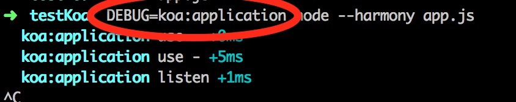

Koa源码
继着上文的Co源码以及与Koa的深入理解，开始学习下Koa是怎么写的。我看的版本是1.1.2的。
从package.json里面看，Koa的入口是application.js，于是先看这个js。
application引用的模块
先从最开始引入的一些模块开始理解。
- debug：最开始引了一个外部的debug模块。这是个好东西，只要在运行的时候使用
DEBUG=..就可以了进行代码的调试了，如下图，如果有多个的话可以用逗号分隔开。会有比较好看的风格，主要是用来替换console.log的，看上去更专业点。

- events：然后引用了nodejs的内置模块events，将application的prototype设置了下
- composition：外部模块，试验性质。是可以将传入的函数包装成一个promise的。
- 主要是支持包括es7的async语法的，如果设置了this.experimental，就会使用这个来执行，否则的话使用co.wrap方法。
- koalization是不是打开了experimental？
- on-finished：外部模块，是在response结束或者失败的时候触发的，如果失败了的话会带个error进来。
- response，request，context：3个内部代码块，都是重新对req，res和context进行了封装。
- koa-compose：外部模块，是个核心方法，将所有的中间件嵌套为循环的genreator，然后就可以交给co去wrap一下变成promise，然后就可以直接执行了。
- koa-is-json：一个小的外部模块，用来检测body是不是json
- statuses：外部模块，简单的http状态码的相互对应而已
- cookies：外部模块，进行cookie的管理
- accepts：外部模块，用来对请求头的accepts进行管理，处理
- assert：外部模块，用来写单元测试的
- stream：内置模块，用来处理流式的数据的
- http：内置模块，用来createServer的
- only：外部模块，用来返回一个新对象，包含只在传入的白名单中的属性
- co：外部模块，前面已经研究过的模块，不再详细记录，参见Co
至此，使用的模块已经清楚，开始看下整个结构。
application的结构设计
Application是被抛出去的总入口，是个构造函数，他的作用是
- 区分传入的环境参数
- 初始化存使用的中间件middleware，一个空数组。
- 使用自己的包装过的3个内部代码来初始化上下文，req和res。
function Application() {
//这一句的作用挺精髓的，因为application是一个构造函数，如果没有new调用的话，就return一个new的
//这里返回的是new Application，而不是new Application()，是不是有些奇怪，其实这两种写法在没有参数时没有区别，在有参数时，必须加上括号~
if (!(this instanceof Application)) return new Application;
//这句就是处理环境参数，默认为开发，代码里可以根据env的值来决定访问哪里的数据库，或者错误log的记录地点等等
this.env = process.env.NODE_ENV || 'development';
//被忽略的子域名位数，比如ppe.b.dianping.com,他的默认子域名就为['ppe','b']，如果设置为3，子域名就为['ppe']
//设置了这个值决定了我们在this.subdomains数组里面可以访问的值
this.subdomainOffset = 2;
//存中间件，下面的app.use方法直接push就好了
this.middleware = [];
//这个东西也不知道是啥。。
//tudo：X-Forwarded-Proto？？
this.proxy = false;
//这三个东西就是作者包装后的上下文，req，res
this.context = Object.create(context);
this.request = Object.create(request);
this.response = Object.create(response);
}
app是Application的原型对象。
强行用emitter的原型来替换了application的原型。
//这样子就继承了事件流
//然后下面的代码this.on('error',fn)来监听
//this.emit就可以触发
//这里想到了点评张老师的cortex里面的模块class也支持implement events这个东西，然后就去看了下他是怎么在browser端支持emitter的，原来是引用了npm的一个模块events
Object.setPrototypeOf(Application.prototype, Emitter.prototype);
然后对app进行原型上的包装。
- app.listen：来createServer的，将
this.callback添加到了request事件上~注意是可以调用多次 - app.toJSON：公有方法，将他作为json输出时，会将subdomainOffset，proxy，env这几个值，好像并没有什么用..
- app.use：很清楚，就是往middleware里面push而已，如果没有打开试验选项experimental，就只能传入generator
- app.callback：处理中间件并且进行返回的地方
- app.createContext：私有方法，创建初始化的上下文
- app.onerror：私有方法，默认的错误处理
- respond：用来帮助返回的方法
主要的执行就是app.callback了，这里对代码进行注释
javascript
app.callback = function(){
//如果打开了实验的接口，就可以使用es7的async,不然使用koa-compose来进行包装，然后再传给co
var fn = this.experimental
? compose_es7(this.middleware)
: co.wrap(compose(this.middleware));
var self = this;
//看是否注册了错误事件，没有的话使用自身的onerror
if (!this.listeners('error').length) this.on('error', this.onerror);
return function(req, res){
res.statusCode = 404;
//在这里对上下文，以及req和res进行了包装
var ctx = self.createContext(req, res);
//注册一下这个是为了处理error
//当error发生时，调用了context的onerror，里面emit了app的onerror，这样上面的this.onerror就可以被触发了。
//为什么这东西能够监听到res的error？？
//tudo：怎么做到的
onFinished(res, ctx.onerror);
//然后执行那个co包装过的promise，成功的话执行respond方法，失败了执行this.onerror方法
fn.call(ctx).then(function () {
respond.call(ctx);
}).catch(ctx.onerror);
}
};
respond方法也挺有意思，注释一下
function respond() {
if (false === this.respond) return;
var res = this.res;
//如果头部已经发送，或者不能写了，跳过
if (res.headersSent || !this.writable) return;
var body = this.body;
var code = this.status;
//如果是一些不需要返回体的code，比如204:没有内容，比如304:未修改)，直接返回
if (statuses.empty[code]) {
this.body = null;
return res.end();
}
//如果是head请求，返回一个length
//head请求允许请求某个资源的响应头，而不要真正的资源本身
if ('HEAD' == this.method) {
if (isJSON(body)) this.length = Buffer.byteLength(JSON.stringify(body));
return res.end();
}
//如果就是没有内容，就设置一个默认的返回
if (null == body) {
this.type = 'text';
body = this.message || String(code);
this.length = Buffer.byteLength(body);
return res.end(body);
}
//对不同的响应体进行判断并且返回
if (Buffer.isBuffer(body)) return res.end(body);
if ('string' == typeof body) return res.end(body);
if (body instanceof Stream) return body.pipe(res);
body = JSON.stringify(body);
this.length = Buffer.byteLength(body);
res.end(body);
}
这里再顺便看一下koa-compose的代码
代码非常精简，功能是将一堆generator的数组包装成嵌套的generator tudo:继续看，没看完呢。。。
module.exports = compose;
/**
* Compose `middleware` returning
* a fully valid middleware comprised
* of all those which are passed.
*
* @param {Array} middleware
* @return {Function}
* @api public
*/
function compose(middleware){
return function *(next){
if (!next) next = noop();
var i = middleware.length;
while (i--) {
next = middleware[i].call(this, next);
}
yield *next;
}
}
//私有方法
function *noop(){}
//如果想跳过某个中间件？？ //return yield next //tudo
本文借鉴了